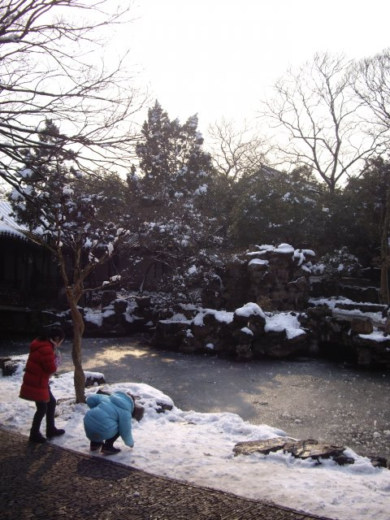
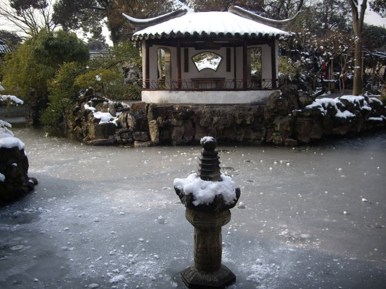

苏州是一早就写过的。那篇文里面，我有百无聊赖地说起一段上海与苏州。轶事之一是王献臣本人两大心愿，一在苏州完成，一在上海完成：在苏州城东完成的，自是他的一院子景趣；而上海龙华寺，则为他带来了乘龙快婿（我说龙华寺是个姻缘之地吧）。据说这两桩心愿的实现所在皆是他乞梦乞得——当然是放屁。而要我说啊，这饰装之处只怕不止这一项。王献臣到底做了多大的官？前前后后查了查，明朝没有御史大夫，只有御史台（都察院）大夫、明又称巡按、七品。——和历史课上学的所谓“御史大夫”，岂分毫之差！这里至少可以得出的一个结论是，我在前文中对于拙政园的感慨，少说要打个六折。
从后来王献臣状告太监被贬来看，这货就应该是个位卑权重的巡按没跑了。好来，学问的开始就是问题的开始，七品监察官，造这么奢侈的一个园子，钱哪儿来？——我想无论拙政园阿房宫或是颐和园等等等等，后世多是如此，民脂民膏所砌，一面于公堂处杀青做罄竹的铁证，一面在史册里粉墨成降世的奇珍。游历把玩之余，曲直早已不是首要，也就遑论其是非了。
相比于他女儿的好彩头，王献臣败家的儿子不光赌运奇差，品性同时不逮。自他伊始，一个大园子沦为赌注，飘摇无期。我自己自问是不够格当王献臣儿子的——这趟心血来潮的旅行，从地铁到火车到公交到票价到午饭连上回程，连个位数都与我预算的几乎不差，即便是午后的阳光与10来页的书亦算得精到。而这一切，全是在过度的从容中完成：玩一个晚上游戏几乎什么功课都没做，懒洋洋地起床，糊里糊涂地随手塞了一些物件进书包，淡定上路。
过了昆山站的时候困意上来，舒服到家地靠着贴满阳光的侧窗小憩了一下。只可惜升级成高铁后，这一休息的时间短了很多。
出站的时候，我讶异得很，眼见苏州站全然面目全非，一年前原本古朴的楼栋消失，换成了宽敞现代的大厅——无人告知过我，一下子懵住，略略地难以接受。实话实说，我是喜欢以前的老站多些的。
叹息之后，便直奔拙政园。照啊，如果是一个旅人专门为了看雪景而来苏州，原应是沧浪亭更相适些许吧。可奇怪的是，我偏记得拙政园、记得兰雪堂秫香馆的名字，一心地想要溜进城东。要说我有多喜欢苏州城呢？在等公车的时候可以和一旁老爷爷自然地聊开，公车会慢慢地开绝不加速去过一个闪烁的绿灯，每次过弯不管大小快慢都会提醒一下游客，忠王府前扫干净的街上小孩子玩雪爸爸会过去教育一通然后找了把大扫帚重新扫好，园里的导游没工作和我有话无话地搭几句。苏州的节奏与风情，真极尽温和。
说起来时路过的园旁忠王府，想到李鸿章破城之后尽屠苏州数万人。一座忠王府，牵连了淮军，牵连了苏州，牵连住了中国。苦难连天，血腥的李鸿章受了后世愤青多少“冤枉”，又有多少学者编剧为他“平反”，最后他又得到了一个多么公正客观的“评价”。停在忠王府前面笑笑，想象起来，仿佛前朝的遗老遗少们马褂齐整。
步入园里，并无太大惊奇。待到近了，评弹声一声拔高起来，整个人潸然入境。
算上这次，拙政园已经来了三次。一切早已熟似邻家。——园中观景的一个极佳的所在宜两亭，名字就是这么来的：“唐代白居易曾与元宗简结邻而居，院落中有高大的柳树探出围墙，可为两家共赏。白居易写诗赞美道：‘明月好同三径夜，绿杨宜作两家春’，以此来比喻邻里间的和睦相处。”
一路领略下来，更知写《白发苏州》的余老师有多傻逼。我想，有朝一日，若非得在流浪他乡中终老，我愿在苏州的市井门庭里，闭上户室，做做学问。
园景之趣，太不好写。我还是直接照片吧。离开前想起暗恋桃花源最后一句喃喃的“南阳刘子骥”，不仅微微茫然起来。不足为外人道也！不足为外人道也！
玩儿雪的小盆雨。

结冰的湖面
